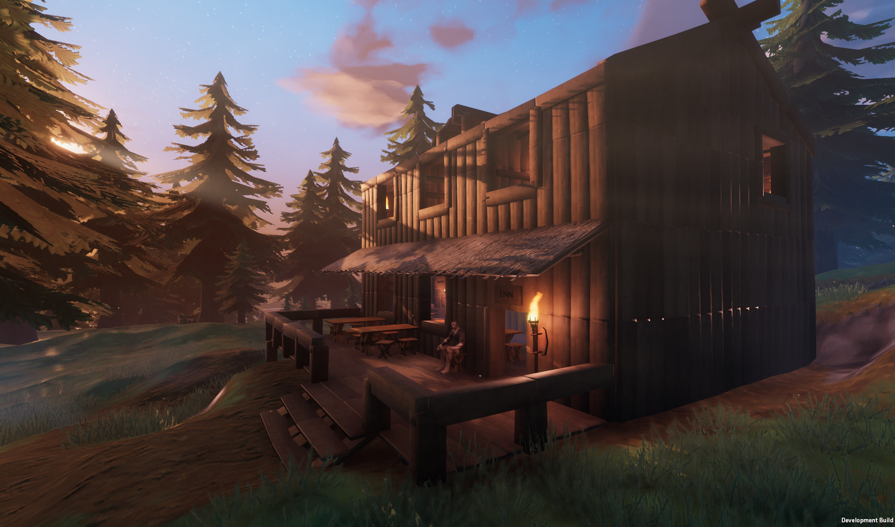

Valheim Base Defense Guide — Raids, Moats & Fortifications
Protect your base from every threat Valheim throws at it. Complete list of all raid events, what triggers them, and how to build impenetrable defenses — from simple stake walls to advanced dry moats, earthen ramparts, and spawn-proofing.

1. All Raid Events (& Boss Triggers)
| Raid Name | Enemies | Trigger | Duration |
|---|---|---|---|
| Eikthyr rallies the creatures of the forest | Necks, Boars | After killing Eikthyr | 90s |
| The forest is moving... | Greydwarfs, Shaman, Brute | After killing Eikthyr | 120s |
| A foul smell from the swamp | Draugr, Skeletons | After killing The Elder | 120s |
| A cold wind blows from the mountains | Drakes | After killing Bonemass | 120s |
| The horde is attacking | Fulings, Berserker, Shaman | After killing Yagluth | 120s |
| You are being hunted | Wolves | After killing Bonemass | 120s |
| The ground is shaking | Trolls | After killing The Elder | 120s |
| What's up, Gjall? | Gjalls | After killing The Queen | 120s |
2. Dry Moat & Earthen Wall Design
The dry moat is the single most effective base defense in Valheim. Enemies cannot pathfind across a trench (2+ meters deep, 4+ meters wide) dug with a Pickaxe along the perimeter. Earthen walls raised with a Hoe are indestructible — no enemy can break them.
- Mark your base perimeter with wooden beams
- Use the Hoe's Raise Ground to build a 2m-high earthen wall along the boundary (costs Stone)
- Use a Pickaxe to dig a 2m-deep trench on the OUTSIDE of the wall
- Keep structures 6+ meters from the edge — trolls with logs can reach through walls
- Build a bridge with a gap for the entrance (enemies can't jump gaps)
3. Spawn-Proofing with Workbenches
Enemies cannot spawn within the radius of a Workbench (20m) or several other player-placed structures (campfires, torches, etc.). Overlapping Workbench coverage creates a spawn-proof zone. Bury Workbenches in small pits with stone lids to keep them safe. A fully spawn-proofed base means raids spawn BEHIND your outer wall — not inside your house.
4. Wall & Defense Comparison
| Defense | HP | Troll-Resistant? | Cost | Best For |
|---|---|---|---|---|
| Roundpole Fence | 100 | ❌ Destroyed in 1 hit | 1 Wood | Boar pens only |
| Stakewall | 400 | ❌ Destroyed in 3-4 hits | 4 Wood | Early-game Greydwarf base |
| Stone Wall (1x2) | 1500 | 🟡 Survives ~10 hits | 3 Stone | Mid-game Swamp+ |
| Earthen Wall | Indestructible | ✅ Cannot be broken | Stone (per raise) | Permanent defense |
| Dry Moat | Uncrossable | ✅ Can't path across | Pickaxe durability | Combined with walls |
5. Advanced Defense Tips
Was this guide helpful?